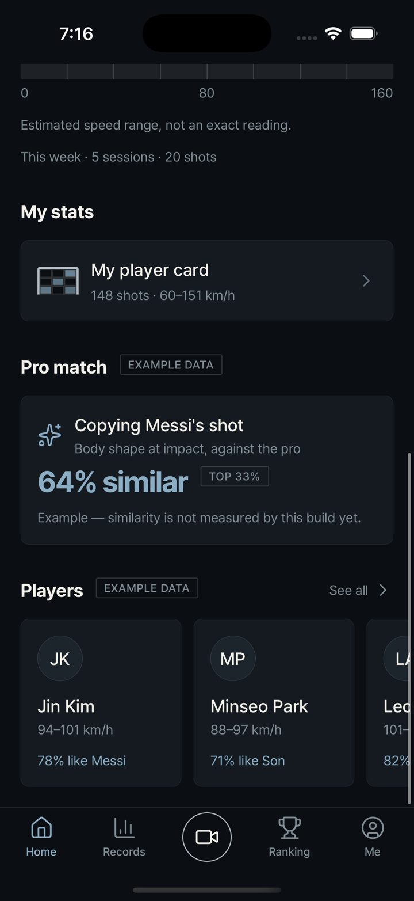
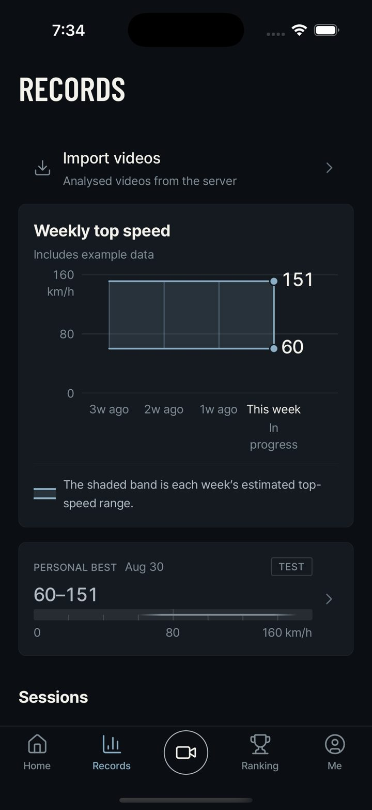
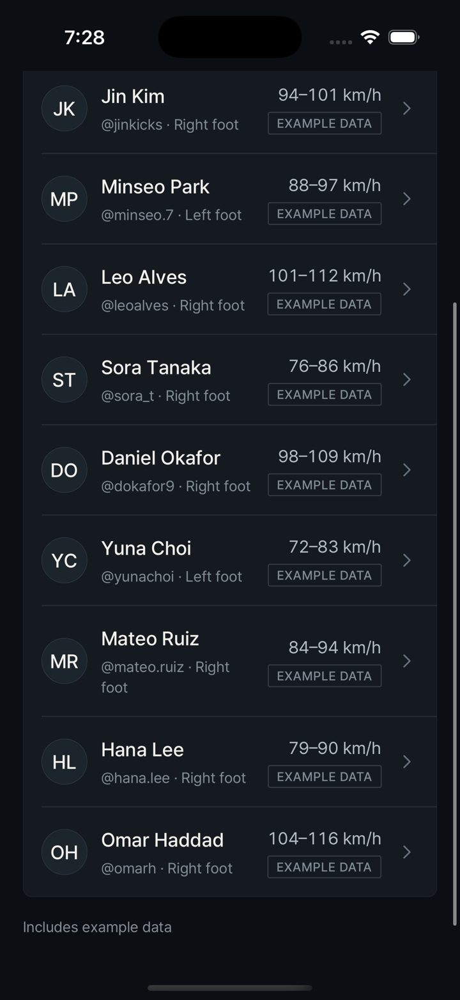
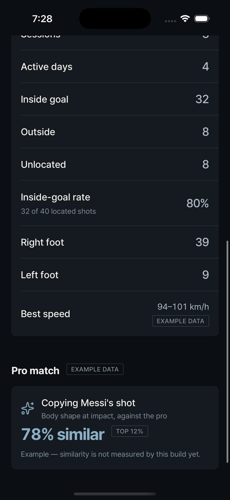
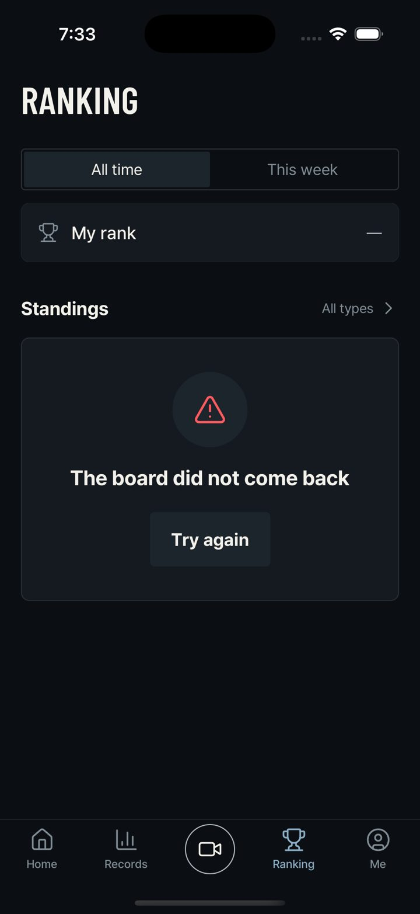
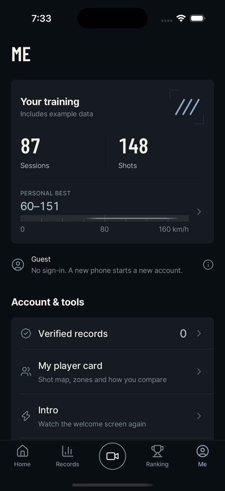

Loading


Native iOS simulator captures (iPhone 17 Pro), 17 September 2026, branch vxbrandon/dev-2026-09-17-2. Every player, similarity figure and shot map on these screens is example data and is marked as such on the screen itself.










